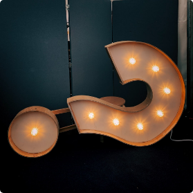

Identifer les besoins
Avant de pouvoir identifier les besoins et les attentes, il était nécessaire de trouver un sujet pour mon projet. Pour cela, j'ai puisé dans ma propre expérience et l'idée m'est venue rapidement : aborder le thème du permis théorique. Cependant, chaque individu peut rencontrer des problèmes différents lors de cet apprentissage.
Afin de mieux comprendre ces diverses préoccupations, j'ai décidé d'aller à la rencontre de plusieurs personnes et de les interviewer. L'objectif était de rassembler leurs expériences et de dégager une problématique commune autour du permis théorique.
Après avoir écouté attentivement les témoignages recueillis, il est ressorti une problématique centrale : le permis théorique représente un parcours long, dépourvu de motivation et qui s'avère également très coûteux.
Une idée qui emmerge
Face à cette problématique, j'ai exploré plusieurs solutions et j'ai finalement abouti à une idée : créer une application gratuite qui permettrait aux utilisateurs de réviser leur permis théorique de manière autonome ou en groupe, en intégrant des objectifs et des missions pour les motiver.
Cette application offrirait une multitude d'exercices avec des corrections détaillées et des explications de solutions, garantissant une préparation optimale à l'examen, tout en préservant l'aspect ludique de l'apprentissage.
Ainsi, le projet était en marche, mais une étape cruciale demeurait : évaluer la concurrence. Il était essentiel de vérifier si une application similaire existait déjà, et si tel était le cas, de déterminer en quoi ma propre application se démarquerait.
Pour cela, un audit me semblait nécessaire afin de comprendre les fonctionnalités offertes par les applications existantes et de définir comment ma future application apporterait une réelle valeur ajoutée aux utilisateurs.
Une idée déja prise
Comme précédemment mentionné, réaliser un audit est une étape essentielle, voire cruciale, dans la concrétisation d'un projet. Il est inutile de le poursuivre si une autre application existe déjà et répond parfaitement à la demande, même s'il est généralement difficile de répondre à tous les types de demandes simultanément.
Feu vert
Commençons donc avec l'application la plus connue feu vert, malgré sa popularité il présente de nombreux défauts. Les questions sont trop simples basées principalement sur des panneaux, la version gratuite ne comprend qu'une série de 50 questions et donc évidemment la deuxième version est payante.
Ithéorie
Passons ensuite à une autre application ithéorie, ici on retrouve deux versions, une version gratuite et une version à 1,19 € mais le constat est à peu près le même pour les deux, les questions ne sont pas vraiment pertinentes ni en rapport avec l’examen. Le debrief est donc plutôt négatif.
Permis-B
Continuons avec l'application Permis-B.be. Selon de nombreux avis, cette application présente des problèmes de connexion et de déconnexion des comptes utilisateurs.
Outre ce problème, qui n'est pas directement lié à l'apprentissage du permis, de nombreuses personnes se plaignent également de réussir fréquemment les exercices mais de se retrouver complètement perdues lors de l'examen. En conclusion, un manque de questions pertinentes et/ou qui préparent adéquatement à l'examen.
Cependant, cette constatation m'encourage à concentrer mon attention sur deux aspects essentiels : la qualité et la pertinence des questions proposées, ainsi que la diversité des thèmes abordés.
Des fonctionnalités
Comme mentionné précédemment, certaines applications ne proposent pas toujours un panel de questions suffisamment large ou pertinent. C'est pourquoi il est important de consacrer une attention particulière à ce point.
Catégoriser les questions
Je pensais donc répartir les questions dans différentes catégories telles que la signalisation, la compréhension du véhicule, les priorités, etc. Cela permettrait aux utilisateurs de s'y retrouver facilement et de se concentrer sur les domaines qui les intéressent le plus.
De plus, une autre catégorie dédiée aux simulations d’examen pourrait être créée, regroupant des questions issues de l'ensemble des catégories mentionnées ci-dessus.
Des groupes de travail
Ensuite, il ne faut pas oublier que l'apprentissage en groupe peut être plus bénéfique que de travailler seul. En m’inspirant de jeux vidéo, j'ai eu l'idée de créer des groupes de travail afin de rendre l'apprentissage plus amusant pour tous.
De plus, en ajoutant un système de classement, cela pourrait stimuler et motiver davantage les utilisateurs à étudier, afin d'être les meilleurs de leur groupe.
Un objecitf
En plus des groupes de travail, il serait également intéressant d'ajouter un système de récompenses pour renforcer la motivation des utilisateurs. Par exemple, des badges pourraient être attribués lorsque les utilisateurs atteignent des objectifs spécifiques, accomplissent des missions ou simplement utilisent l'application pendant une certaine durée.
Ces récompenses symboliques permettraient de reconnaître les efforts des utilisateurs et de créer un sentiment d'accomplissement, les encourageant ainsi à continuer à utiliser l'application de manière régulière et à s'engager davantage dans leur apprentissage.